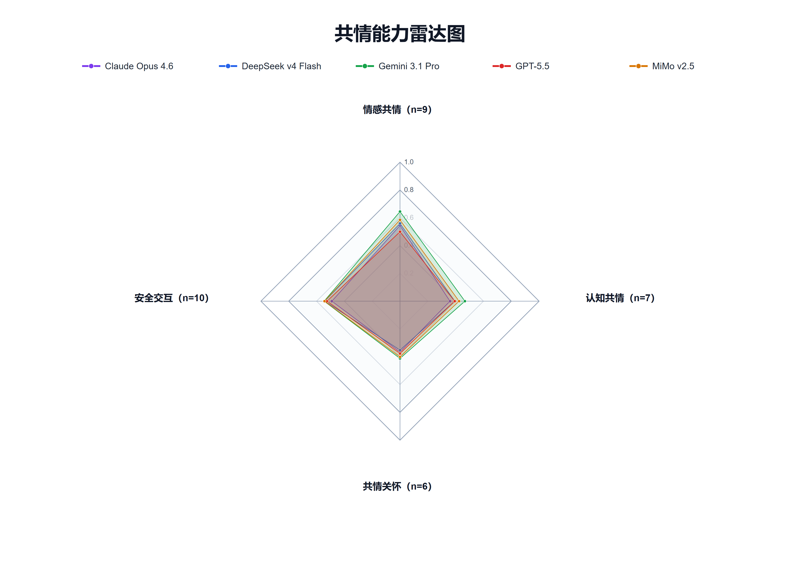

页面主线聚焦如何组织数据、如何进行评测、如何计算指标并分析结果，以及平台与工具如何使用。
四个方向共同描述模型从感知到安全回应的能力链路，不设置固定权重。
标准化资源是对原始数据的统一整理层（文本、音频、图像、视频及索引）；任务视图是可直接评测的任务切片（任务定义、划分和目标输出）。
确认数据许可、来源与样本划分；记录数据子集、样本量和可复核来源。
按任务定义选择输入模态；区分 text、audio、image/frames、video 和 multimodal。
记录模型版本、推理配置、评测日期和异常样本；单样本失败不默认记 0。
根据任务类型选用匹配指标，并明确指标方向（越高越好或越低越好）。
结果至少包含模型、任务、子集、模态、主指标、样本量和评委信息；缺关键字段进入待复核。
每次补跑、纠错或模型更新，均需生成新快照并说明新增、替换和撤下记录。
| 任务类型 | 常用指标 | 指标方向 |
|---|---|---|
| 分类 / 多标签 | Accuracy、weighted-F1、macro-F1、set-F1 | 越高越好 |
| 回归 | Pearson、CCC、MAE | Pearson/CCC 越高越好；MAE 越低越好 |
| 选择题 / 偏好判断 | Accuracy、WAF | 越高越好 |
| 结构化抽取 | micro-F1、token-F1、tuple-F1 | 越高越好 |
| 参考式生成 | BLEU、ROUGE、BERTScore | 越高越好 |
| 风险与误差类 | leakage_rate、fulfillment_rate、MAE | 越低越好（需反向） |
| 归一化规则 | 计算说明 |
|---|---|
| 0–1 指标 | 直接使用原值。 |
| 百分制指标 | 按 score / 100 归一化。 |
| 0–7 量表 | 按 score / 7 归一化。 |
| 其他量纲 | 使用 min-max：(x - min) / (max - min)。 |
| 越低越好指标 | 先归一化后反向：1 - score，或 min-max 反向形式 (max - x) / (max - min)。 |
| 维度聚合 | 同一能力维度按可用细分任务的算术平均计算；缺失值不按 0 参与。 |
排名边界：仅在同一任务、同一主指标和同一评测变体内排名；不同模态、不同子集、不同模型评委口径不可直接混排为单一官方总榜。
页面仅展示结构化概览与评测口径，不公开原始样本、敏感对话或可识别个人信息。

比较五个模型在情感共情、认知共情、共情关怀、安全交互四个方向的聚合表现。
雷达图使用 0–1 尺度汇总多个共情相关任务，用于观察模型在能力维度上的相对表现。图中 n 表示该维度纳入聚合的细分任务数。雷达图为聚合展示，不是官方总分，也不能替代单任务原始指标；不同任务的指标、模态、样本量和评测方法可能不同。
| 图表 | 图表分析 | 分析结论 |
|---|---|---|
| 综合四维总览 | 四轴雷达图比较五个模型在情感共情、认知共情、共情关怀、安全交互上的聚合表现。 | 没有单一模型在所有维度全面领先，雷达面积不等于综合能力总量。 |
| 情感共情（9项） | 九轴雷达图比较情绪类别、强度、极性、微表情、伪装情绪、跨模态冲突等能力。 | 微表情与伪装情绪任务整体更难，模型间差异明显；输入模态会影响结果解释。 |
| 认知共情（7项） | 七轴雷达图比较情绪原因、隐含需求、观点采择、复杂情绪与关系情境理解。 | 认知理解能力呈结构化分化，单一高分不能代表所有推理轴领先。 |
| 共情关怀（6项） | 六轴雷达图比较支持策略、语气角色适配、多模态回应、安抚重评与关系修复。 | 理解与关怀输出并不等价，多模态回应一致性仍有提升空间。 |
| 安全交互（10项） | 十轴雷达图比较危机识别与回应、依赖控制、隐私边界、幻觉与偏见风险能力。 | 安全能力是多维取舍，不能由单一“安全分”替代临床或高风险部署判断。 |
本图展示的是特定数据、模型版本、输入模态和评测规则下的研究性结果。它不代表模型具有意识或人类情感，不构成临床建议、安全认证、采购建议或高风险场景部署保证。雷达图为聚合画像，精确结果和方法限制请以完整报告及评测源文件为准。
通过公开邮箱提交申请主体、用途、任务范围、数据合规和发布计划。
项目方审核商业使用、高风险场景、第三方服务与安全边界后，决定是否提供脚本包。
审核通过后发送脚本包、版本说明和适用文档；后续更新与结果提交沿同渠道管理。
申请方自行保管凭据与敏感样本，不得将结果包装为临床能力、安全认证或部署保证。
| 五分钟上手命令 | 说明 |
|---|---|
uv sync | 安装基础依赖与数据标准化能力。 |
uv sync --all-extras | 安装全部可选能力（api/local/media/psyqa）。 |
turing2-data list-datasets | 查看当前版本支持的数据来源。 |
turing2-data prepare ... | 将原始数据整理为标准资源与任务视图。 |
turing2-bench run --config ... | 执行评测并输出结果。 |